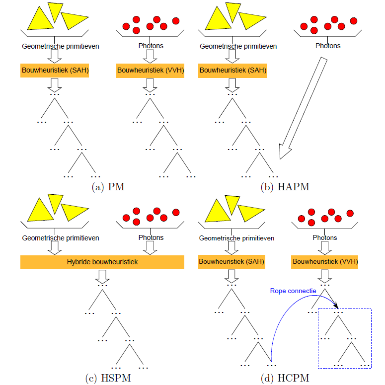

Master’s thesis, Department of Computer Science, KU Leuven, June 2015
Hybrid Kd-trees for Photon Mapping and Accelerating Ray Tracing
Computer Graphics Research Group, Department of Computer Science, KU Leuven

Master’s thesis, Department of Computer Science, KU Leuven, June 2015
Computer Graphics Research Group, Department of Computer Science, KU Leuven

Acceleration data structures such as kd-trees, which partition geometric primitives, aim to reduce the ray traversal cost. Photon maps such as kd-trees, which partition photons, aim to reduce the cost of performing k-nearest neighbor queries. We introduce three hybrid kd-trees, which partition both geometric primitives and photons:
Our HH encapsulates both the RTSAH for acceleration data structures and the Voxel Volume Heuristic for photon maps. By taking ray termination into account we achieve intersection test reductions up to 47% for primary rays and 41% for shadow rays versus the SAH. The HAPM and HSPM generally increase total rendering time; only the HCPM achieves reductions of up to 1%.